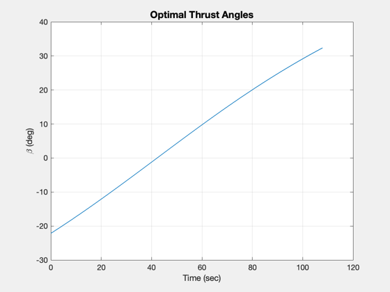
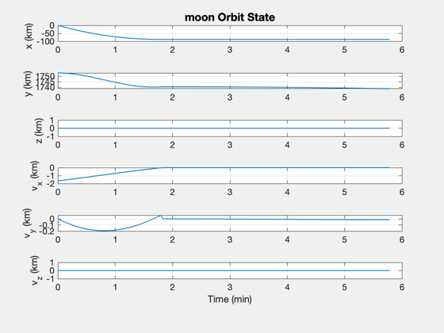
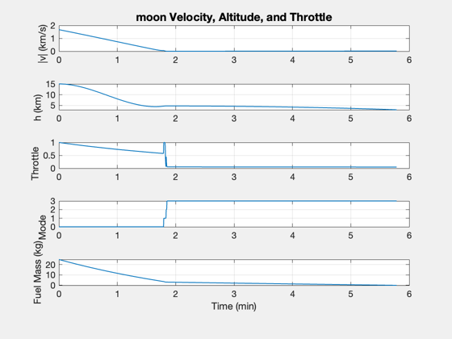
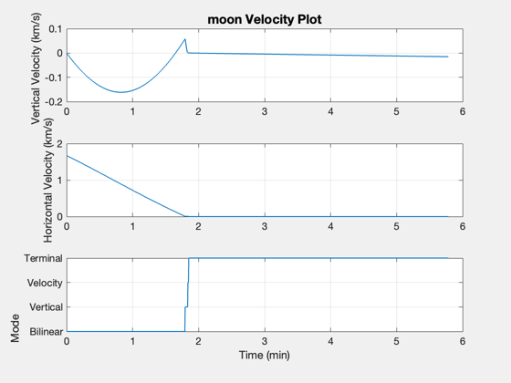
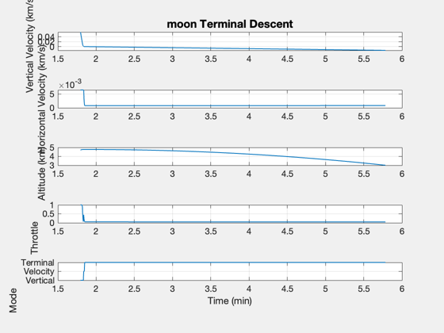

Contents
3D lander simulation using the bilinear tangent law.
The spacecraft has 3-axis thruster control. Ideal attitude pointing is assumed. An altimeter gives the altitude. The planet is assumed to be a perfect sphere. The dynamics model accounts for the changing mass of the vehicle as fuel is consumed.
This demo demonstrates the bilinear tangent law for descent from a circular equatorial orbit. Choose between the moon, Mars, and Enceladus, or add your own body.
Things to explore:
1. For the bilinear control, vary the control acceleration (nAccel). 2. Try different starting altitudes. 3. Try different planets: moon, Mars, Enceladus
%-------------------------------------------------------------------------- % See also: LandingControlBilinear, Inertias, RHSPointMass, RK4, Plot2D %--------------------------------------------------------------------------
%-------------------------------------------------------------------------- % Copyright (c) 2013-2014 Princeton Satellite Systems, Inc. % All rights reserved. %-------------------------------------------------------------------------- % Since version 2014.1 %--------------------------------------------------------------------------
Simulation time parameters
%-------------------------------------- dT = 0.25; % sec
Parameters
%------------ hStop = 0.0005; % km uE = 320*9.806; % Exhaust velocity (m/s) % Select the planet or moon %-------------------------- body = 'moon'; %'Moon'; %'Mars';'enceladus' % Planet/moon parameters %----------------------- d = struct; switch lower(body) case 'moon' rPlanet = Constant('equatorial radius moon'); % km muPlanet = Constant('mu moon'); h = 15; % Altitude of initial orbit tEnd = 7*60; % sec nAccel = 10; % Engine acceleration is this multiple of gravity massFuel = 25; d.mass = 25; % kg gainVelocity = 2; velocityThreshold = 0.001; vMaxFrac = 0.2; case 'enceladus' rPlanet = 252.1; % km muPlanet = 1.08022e20*Constant('newtonian constant of gravitation')/1e9; h = 10; % Altitude of initial orbit tEnd = 10*60; % sec nAccel = 8; % Engine acceleration is this multiple of gravity massFuel = 8; d.mass = 100; % kg gainVelocity = 0.5; velocityThreshold = 0.001; vMaxFrac = 0.2; case 'mars' rPlanet = Constant('equatorial radius mars'); % km muPlanet = Constant('mu mars'); h = 150; % Altitude of initial orbit nAccel = 7; % Engine acceleration is this multiple of gravity tEnd = 5*60; % sec massFuel = 1000; d.mass = 200; % kg gainVelocity = 4; velocityThreshold = 0.001; vMaxFrac = 0.2; end % Simulation time steps %---------------------- nSim = floor(tEnd/dT); % Spacecraft inertia at start %---------------------------- d.inertia = Inertias( d.mass + massFuel, [1 1 1], 'box', 1 ); % kg-m^2
Set up the bilinear controller
%-------------------------------- dBilinear = struct; dBilinear.mu = muPlanet; dBilinear.mass = d.mass + massFuel; dBilinear.rP = rPlanet; dBilinear.h = h; dBilinear.nG = nAccel; dBilinear.dT = dT; dBilinear.inertia = d.inertia; dBilinear.hLanding = 0.1; % The altitude at which to switch to landing mode dBilinear.throttle = 1; dBilinear.landing.gainVelocity = gainVelocity; dBilinear.landing.velocityThreshold = velocityThreshold; dBilinear.landing.vMaxFrac = vMaxFrac; dBilinear.landing.hTouchdown = 0.001; dBilinear.bypassACS = 1; dBilinear = LandingControlBilinear( 'initialize', dBilinear ); % Determine initial s/c orientation (align s/c with initial beta angle) %------------------------------------------------------------------ d.hLanding = dBilinear.hLanding;
Descent duration 107.8732 sec
Simulation
%------------ % Gravity %-------- d.mu = muPlanet; % km^3/s^2 % Disturbances %------------- d.fDist = []; % The landing force function % State vector [r;v;mass fuel] % Assume a circular orbit to start %--------------------------------- r = rPlanet + h; u = sqrt(muPlanet/r); x = [0;r;0;-u;0;0;massFuel]; % Initialize state vector array for plotting %------------------------------------------- xP = zeros(length(x)+3,nSim); % Initialize time %---------------- t = 0; % Simulate until the lander reaches the surface (within 1 mm) %------------------------------------------------------------ for k = 1:nSim % Sensing - determine altitude %----------------------------- hAltimeter = Mag(x(1:3)) - rPlanet; massFuel = x(7); % Controller %----------- dBilinear.mass = d.mass + massFuel; dBilinear.r = x(1:3); dBilinear.v = x(4:6); dBilinear.hAltimeter = hAltimeter; dBilinear.t = t; dBilinear.pointingTol = 0.001; dBilinear = LandingControlBilinear('update',dBilinear); d.forceECI = dBilinear.forceECI; % Store for plotting %------------------- xP(:,k) = [x;hAltimeter;dBilinear.throttle;dBilinear.mode]; % Stop when we reach the surface or run out of fuel %-------------------------------------------------- if( dBilinear.landing.mode == 4 ) fprintf(1,'Touchdown! |v| = %12.4f km/s\n',Mag(x(4:6))); break end if( hAltimeter <= hStop ) fprintf(1,'Terminating due to hitting the ground. |v| = %12.4f km/s\n',Mag(x(4:6))); break end if( massFuel <= 0 ) fprintf(1,'Terminating due to running out of fuel. |v| = %12.4f km/s h = %12.4 km\n',Mag(x(4:6)),hAltimeter); break end % Fuel consumption %----------------- d.mDot = -abs(Mag(d.forceECI))/uE; % Integrate %---------- x = RK4(@RHSPointMass,x,dT,t,d); % Increment time %--------------- t = t + dT; end
Altitude 4.7780 Free-fall velocity 0.0878 Maximum allowed velocity 0.0176 Terminating due to running out of fuel. |v| = 0.0151 km/s h =
Plot the simulation results
%----------------------------- xP = xP(:,1:k); % Time label %----------- [t,tL] = TimeLabl((0:(k-1))*dT); % Plot Titles %------------ s1 = sprintf('%s Orbit State',body); s2 = sprintf('%s Velocity, Altitude, and Throttle',body); s3 = sprintf('%s Terminal Descent',body); % Plot position in ECI frame %--------------------------- yL = {'x (km)','y (km)','z (km)','v_x (km)','v_y (km)','v_z (km)'}; Plot2D( t, xP( 1:6,:), tL, yL, s1 ) % Summary plot %------------- yL = {'|v| (km/s)' ,'h (km)', 'Throttle' 'Mode' , 'Fuel Mass (kg)'}; Plot2D( t, [Mag(xP(4:6,:));xP([8 9 10 7],:)], tL, yL, s2); % Velocity plot %-------------- uV = Unit(xP(1:3,:)); vV = Dot(uV,xP(4:6,:)); vH = Mag(xP(4:6,:) - uV.*[vV;vV;vV]); s2 = sprintf('%s Velocity Plot',body); Plot2D( t, [vV;vH;xP(10,:)], tL, {'Vertical Velocity (km/s)' 'Horizontal Velocity (km/s)' 'Mode'},s2) subplot(3,1,3) set(gca,'YTick',[0 1 2 3 4],'YTickMode','manual',... 'YTickLabel',{'Bilinear' 'Vertical' 'Velocity' 'Terminal' 'Touchdown'}) % Generate a terminal maneuvering plot %------------------------------------- kT = find(xP(10,:) > 0 ); vV = vV(kT); vH = vH(kT); xP = xP(8:10,kT); t = t(kT); Plot2D( t, [vV;vH;xP], tL, {'Vertical Velocity (km/s)' 'Horizontal Velocity (km/s)' 'Altitude (km)' 'Throttle' 'Mode'},s3) subplot(5,1,5) set(gca,'YTick',[0 1 2 3 4],'YTickMode','manual',... 'YTickLabel',{'Bilinear' 'Vertical' 'Velocity' 'Terminal' 'Touchdown'}) %-------------------------------------- % $Id: 5d3f118ba3c37ae4ab8336a019e01eeffe1d408a $   